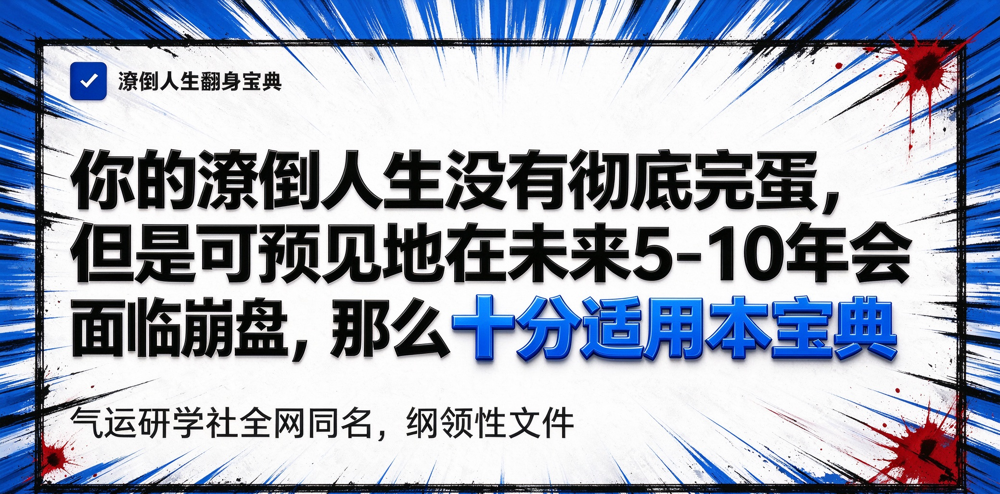

一、三大公理
公理1：世界的构成就是50%概率的正和反。
注：从朴素古老的阴阳理论，到与生活息息相关的计算机底层逻辑，再到还没研究透彻的量子力学，无不充斥着50%正反对立的影子。
公理2：硬币只能扔一次。
注：硬币只有扔第一次的时候，才是50%正反概率。你想要正，第一次扔中了，贪心又扔了第二次，连续两次扔中正的概率为25%。所以扔硬币要么不扔，要扔就只扔一次。
公理3：游戏不好玩可以删掉不玩。
注：至少在当今世界，每个人都有自主删除游戏的能力和权利，它们并没有被剥夺，在未来世界甚至有可能会被剥夺掉删游的自由。
二、适用人群
（一）潦倒人士
你是否正在经历十分糟糕的人生，但你的问题99%都能用钱解决？你是否学业不顺，工作也不顺，但它们都能用钱解决？你是否认为你的收入让你看不到未来？你是否认为生活现状正在逐渐下降，未来5-10极大可能崩盘？你是否认为你10年、20年后不知道自己在做什么、能做什么，对稳定收入没有预期？
一个38岁的男人在成都，送着外卖，一个月拼死拼活6000元，有一套裁员前在私企上班时买的小房子，一个月还贷款3000元，一年下来消费省着点能攒下点钱，但是身体一天不如一天，也不知道还能干几年。家里基本上没什么可助力的，这样的日子，对未来没有丝毫信心，也没有技能和人脉去破局，创业更不敢想，收入如果断了就是慢性死亡。
杭州，34岁算法工程师，年包80万，其实作为算法工程师来说，这个年龄这个收入算混得不好的。因此他知道自己很有可能过不去35岁这个坎了，他所在的中厂也的确启动了裁员。然而他在2021年高位上车了一套90平的紧凑套三，4万2的均价，现在均价2万6，接近腰斩。孩子5岁，老婆是全职太太，一旦裁员立马崩盘。
（二）追梦人士
你是否在心底仍有一团火焰，只是没有人知道它在燃烧，甚至你自己几乎看不到它的火星？你是否仍记得儿时的梦想，它至今仍未褪色，时常让你魂牵梦绕？你是否觉得有一件事自己非走不可，不做这辈子真是白活了，可是客观上欠缺启动它的资金？
老王是一个运气不错的人，他曾经是一家本土大型餐饮公司的经理，靠上班攒下一些钱后踩上了大牛市的红利，他拿着赚来的钱辞职开了一家小餐馆，一年净利润也有个30万左右。但他积累了这么多年的餐饮经验与人脉，他一直想做一件事，就是餐饮供应链。他算了一下，他把他所有的资产变现加上贷款，也只能凑出500万，可是他要做的事，无论如何，没有1000万绝无启动的可能。为此他郁郁寡欢，这是他一辈子想做的事，可是没有任何契机，只能在麻木中日复一日。
（三）没有底牌的人是不适用的
如果一个人已经凑不出来任何资产了，也借不到任何钱了，有着无法直视的负债，那么这种情况，本宝典也没有办法，死局是解不开的。
三、核心宗旨
（一）英雄与勇气
你是否在影视作品、名著小说中看到过这样的桥段：一个可怜人，被恶人欺压，家破人亡，他走投无路的情况下，没有人帮助，拖着残缺的身躯，拿着没有什么杀伤力的武器，一步又一步地走向敌人的基地，BGM宏大而深沉，他在以卵击石，但他的勇气值得称颂，因为他在拼命，最终，在无数无法想象的困难后，他胜利了，他成为了英雄。
请你思考。如果把命运比作敌人，你有跟命运拼过命吗？一个高三的少年，每天要照顾病重的父亲，同时还要走10里路去读书，每年学到凌晨2点，连辅导书都是借的，只为考出大山，报答亲人，这，是在和命运拼命。是我们印象中典型的拼命，他有勇气，有韧性，他是英雄。而如今，无论你曾经是否有跟命运拼过命，你现在又到了要拼命的时刻了。那么，如何拼？
（二）面对失败
如何拼，先不讲。影视作品中，只有主角和BOSS拼命，有赢的份，更多的时候NPC和BOSS拼命的下场，就是死亡。同样的，你如果正式决定和命运拼命了，你的结局，是死亡。所以，我一定要劝你，好好想一想，真的到了不得不拼命，必须要拼命，一定要拼命的时候了吗？
（三）牢记公理
再看一遍气运研学社三大公理吧。一定要牢牢记住他。假设有造物者，它创造人类时给了性这个生理礼物，这是一项很大的馈赠，无论你多有钱，你也就一个屌，你一次插不了两个洞。同时它也给了人类社会一个原始的、最高级的、人人都能使用的官方外挂，那就是：赌博。
（四）翻身心法
本宝典指导你翻身的方法就是赌博。但，这里的赌博是指原始的、最古老的、最高级的赌博理念，并非人类后世创造的赌场、赌马、赌球等等花样。在这一点上，凡习我《潦倒人生翻身宝典》之人，需绝对遵守戒赌的原则，杜绝一切形式的赌博。
公理1告诉了我们世界的底层逻辑，就是正反两面，各50%概率，那么如果你赌一次，那么你赢的概率就是50%，你再也没有办法从其他形式的赌博获得如何高的胜率了。公理2告诉了我们硬币只扔一次，第一次一定是输赢都是50%的概率。那么此刻，你终于明白了，潦倒人生的翻身唯一之法便是：
仔细想一想，当你在四处筹钱的时候，像不像那位英雄在忍着身体的病痛默默地磨着准备拿去拼命的、可笑的刀。但是你此刻就是英雄，你是自己的英雄，因为你终于有勇气和这该死的命运做决一死战了！让我再叫你一声，英雄！
再回看举例1，这位外卖员，他把成都的小房子做多次抵押，再把网贷能贷的都贷出来，再向亲戚朋友全部借一个遍的钱，他能凑出来150万，这150万他拿去赌大小，50%的胜率，胜利后他将会凭空多出150万来，他把该还的钱还了，送外卖直到他送不动，剩下的钱，足够他安安稳稳过完这一生。再看举例2，这位程序员，同样能凑到接近350万，在和命运的拼命中，他胜利后，即便被裁员，可以换到一个6线城市去，重新和妻子找份工作，孩子在当地读书，幸福小康地过往一生没有问题。再看举例3，他凑到500万后，翻身到1000万，他终于可以实现他一辈子的梦想了，安稳算什么，他不要安稳，他只求曾经燃烧过，至于梦想之后完成得怎样，那是后面的事，他已经触碰到了自己的梦想，此生无憾。
（五）不要拼命
再次强调，输的概率也是50%，千万不要一时冲动。
四、实操
（一）优秀的赌大小方式
在前面的章节，我们已知，绝对不能沾上赌博，拼命只能拼一次，只有第一次才是50%的概率赢。那么你可能会想到，去正规赌场里赌大小，是的，没有问题，去掉赢了之后它几个点的抽水，你仍然赢了非常多，接近翻倍的。
但是这种盈利方式是折线型的，并非曲线型的。比如说，当你下注的时候，你就只能等来两个结果，要么大，要么小，小就是归零，大的金额也是固定。古代的话，可能只有这个办法。而我们在现代社会，因此我们有用更优秀的方式去赌大小。你开通一个股票账户或者BTC的合约账户，通过杠杆放大涨跌幅，以达到快速出结果的目的。注意，这里杠杆只为加速出结果，并不是说你上了杠杆你就赚更多了，因为股票或者BTC的涨跌幅没有那么大。
假设你开了杠杆，买涨，现在盈利100%，就是说你的钱已经翻倍了，当然，会扣掉一些费用。如果是传统方式，你这单就结束了。但是曲线型的盈利方式特点就是，你可以设定，当你的盈利从100%掉到95%时，自动卖出，你可以保证你至少有95%的盈利，而他如果继续上涨，你将会得到更多，想什么时候卖出就什么时候手动卖出。
（二）你有哪些牌可以打？
房、车、存款、借款、金融产品等等等等，这些不赘述，至于如果把这些变成赌资，也很简单，不赘述，重要的是，你一定要想清楚。你有高达50%的概率翻身，但你也有50%的概率死亡。为什么说死亡，你那样凑钱之后，如果输了，你没有脸再见任何人。还记得公理3吗？游戏不好玩可以删掉不玩。请你记住，你选择和命运拼命，你是英雄，可是你输掉后还继续连累爱你的人，那么你是狗熊。
五、翻身之后注意事项
（一）永远不可再碰赌博
第一次是50胜率，第二次就是25%，永远不要贪心。
（二）保持或者你的欲望水平
你赢的钱是根据你的消费估算你未来几十年的花费，或者是你为了完成你梦想的金额，如果你因为你增加了钱而增加欲望，那么你将万劫不复。
（三）有条件的情况下帮助他人翻身，传播我们的理论
当你身边有人绝望到快自杀了，告诉他我们的理论，也许，他将获得那50%概率的胜利，这比直接去死好多了。
六、如何加入气运研学社
（一）什么人可以加入
- 如果你只是学习我们的理论，我们有公开群。但此刻你还不是我们的成员。无论你是接触我们的理论之前或者是接触之后和命运拼命，只要你在我们的活动中讲出你的经历，符合我们的理念，你就可以成为我们的正式成员，加入我们的内部群。但是注意，我们的研学社为什么叫"气运"二字，因为我们都是在和命运的抗争中胜利的人，我们都是英雄，我们都是那50%胜利的一方，我们都是拥有绝对气运之人，我们之间互相联系、交流就是正能量的不断交融，我们的气运会越来越好。
- 你一定是在经济上劫后余生的人，没有经历劫后余生，再有钱也不符合。
- 不考察你的具体财富体量，但你的财富需要在你的支出水平下可以用一辈子。
（二）加入之后需要做什么
其实什么都不用做，大家自然交流、聚会，气运就互相融合，也不收费，所有活动AA制，别忘了，我们都已经是不用为钱烦恼的人了，不是吗？只不过如果你在生活中，遇到了可以用我们的理论去拯救的人，你能帮就帮一下。
（三）失败的人怎么办
再次强调，这不是儿戏，失败了会死。你不要想着去试一试，失败再说。你失败了，你继续拖累其他人的话，你完全背离了我们的宗旨，如果是这样，你根本就不应该开始。如果你真的完完全全确定了，要和命运拼命了，你去了，但是你输了。如果我们得知了你的故事，我们会告诉大家你的故事，并根据你的经历做成电子墓碑，你值得尊敬，你删游了，但是你仍然是骄傲的。
七、学社社规
- 学社不进行任何商业行为，成员也不可以学社名义进行。
- 成员之间私下财务行为与学社无关，也绝不鼓励。
- 除学社社长外其他成员不可以学社名义公开组织活动。
- 一切活动AA制，鼓励高净值成员主动承担。
- 杜绝一切违法犯罪行为（国内法、国际法）。
- 拼命前拼命后，你的欲望不可改变，如果你增加了新的欲望你的钱覆盖不了你的余生；或者你赢了一次，你觉得你还可以再赢一次，对不起，你背离了我们的宗旨，请你离开。
八、一些延伸思考
1. 哲学
我曾经在思考一个问题，我们中国人爱说的"道"，我以前认为，大道才是道，大道才值得传播。可以现在我的想法好像改变了。我的理论只适用于特定人群，这显然不是大道，但是它既有纲领性的理论，又有完全可以照搬进行的实操，这样的宝典的的确确能够帮助到人，那就是小道，小道也值得传播。
2. 圣贤
在我心中，老子是远超孔子的，甚至说孔子和老子就不在一个赛道。但是基于朴素的普世价值观，这里暂且把他们放到一起，统称为圣贤。老子通过他的理解解释了宇宙，当然，按照他的说法讲出来了就变味了，还得靠自己悟。孔子主要讲做人、道理、为政这些。我想说的是什么呢，我有一天突然发现，如果未来某一天，货币消失了，市面流通是一种人体能量Token 的东西，又或者，在别的星球，没有国家这个概念，道德也和我们的完全不同，那个时候孔子的东西也许完全用不上了，但是呢，我发现，赌博仍然存在，赌大小仍然是50%的胜率，那么，就是说，在地球的影响力层面，我的理论不如孔子，是完完全全的只服务于小部分人群，但是我的理论却可以穿越时空、穿越意识形态、穿越社会结构，无论在什么样结构下，哪怕几亿年后，只要有文明存在，就可以赌大小，就可以和命运拼命。这是一个很神奇的发现，从这个角度讲，我就是思想家、哲学家、教育家，哈哈哈，对吧。
3. 法律
我是在叫人去死吗？不是。是一个人本来就看到自己的结局是死亡了，与其眼看着死亡的到来，不如通过学习我的理论，让自己提前面对死亡，从必死变成50%概率，并且拼命拼赢之后可以有质量地好好活下去。另外，我额外赠送一个观点，假设你得了病，治疗要50万，你在犹豫治不治，让我来教你如何做决定，你就拿这50万去赌大小，赌赢了该你活并且刚好用挣来的钱当费用，赌输了你就当你已经治了只是失败了你没有这个命，用这样的方式去决定治不治，再没有第二个人纠结内疚。
4. 宗教
试想一下，在多年以后，学习理论的有很多人，正式成员也有很多人。在我所了解的世界运行规则里，会出现一个很有趣的现象，会有人总结正式成员为什么会赢，有哪些共性，逐渐衍生出一套类似科仪的言行、规则，通过这些方式来提升拼命时的气运。输掉的人没法再发声，胜利的人而又更加坚信自己做的科仪提升了自己的气运从而胜利。长此以往，也许会成为一种新兴宗教，或许拜的神像是赌行的祖师爷韩信？乌曹？
总之，这可能会很有趣，如果要追踪研究这个过程，特别有钱的朋友可以单独联系，这需要一定的经费。
九、社长其人
这一节讲的是我悲惨哀痛的一生，同时也是这个理论诞生的过程。
我生在一个的小工业城市，父母在我12岁时离婚，也就是小学升初中的那个夏天，后妈住进来了。后妈是个洗脚妹，我的父亲是62年生人，他毕业于现在的985华南理工大学的化学专业。在那个年代，是无法想象的牛逼。但是他出身农村，思想上的上限锁死了，他没有留在大城市，反而回了老家。这也是他悲剧一生的开始。如果不离婚，我父母都是非常好的单位，离婚后家里就没那么宽裕了。因为他们闹离婚，我小时候基本放养，我没学坏，但是一些基本的做人方面的教育也缺失了，这也是我悲惨一生的开始。我从初中到高中，6年期间，就是每个班级里都有一个的那个胖子，受人欺负，嘲笑，我运气好一点，没有人霸凌我，但是语言上的霸凌其实也是霸凌，让我极度自卑。
高考前，我没有目标，不知道要做什么，以至于高考后的第二天，我的身体机能不知道触发了什么机制，让我把所学的东西都忘了，瞬间就不会了，同时也失去了学习能力，学东西不行了。我虽然2008年读的二本，但是我是电气专业，很好找工作，到现在平均同学收入不低于20万。但是因为自卑（自身条件+家庭经济变差），自卑到想要逃离到没有任何人认识我的地方，所以我没有按照电气专业应该走的路去走，而是去了外省随便瞎找工作。
然后开始了我噩梦般的14年，我在外省晃荡了一年半，一事无成，但是嘴皮子不知道怎么变好了，混不出来决定到家乡的省会城市，也是我读书的地方。找了份外企工作，其实挺好的，但是因为我小时候缺失的教育，导致我人际关系不行，原本我的岗位在2014年能挣至少20万一年，中间很多门道因为我的性格原因，领导没有让我去碰。后来脑袋抽了跑去开店，亏了，又去做外汇，又亏了。然后底谷时获得一份销售的工作，是一家互联网大厂的正式合同，发展很好，但是又是性格原因，我虽然工作做得很好但是人际太少，没有取得职位上的发展。后面去通过跳操去其他大厂实现了工资和职位的提升，但是还是那个问题，人际。然后经历裁员。
此时简历已经花了，不好找工作了，然后我又考公，又浪费了一年，没考上，又接触到了花钱进国企的工作，又被骗了。走投无路的情况下，我悟出了这个理论。于是我集中了所有能集中的资源，我选择了和命运拼一次命，对了，我不会去跑网约车送外卖的，绝不，因为如果我选择电气专业正常走的路，我会在一家绝对不会裁员的央企拿着稳稳当当的20万年薪，我宁愿死，我也不去。我是哭着写下这一段的，因为太过痛苦，只有真正和命名拼过命的人，才会懂得这种感受。是的，50%的概率，我胜利了。
我的欲望没有变化，我的钱够我活一辈子了。但我的欲望有没有波动过呢，有的，你们有没有小时候的同学玩得不错后来不联系了，既是朋友但是考试又会暗暗较劲。我有一个这样的朋友他现在是阿里的Ai算法工程师，还上了阿里云的官方抖音露脸，年薪150万，而那时我们的成绩接近，但是高考他超常发挥我发挥失利，本来我也进了互联网大厂，但是我小时候缺失的教育使我人际太差而掉队，我有时候确实想到这个会很难过，难过得甚至觉得生活都没有意思了。我现在隐居在一家公司做着轻松的一线工作，虽然不上班也行，但这样也挺好的。并且这不妨碍我写下这个伟大的理论，它曾经救了我，
它，还会救更多人！
十、联系我们
番外 · 学社诗
几度难堪人世煎。
今朝终得风化雨，
俯身叩首拜苍天。